Flat art remake (18 Oct)
Matilda's poses, Max's poses and the four Unit 1.1 nouns redrawn in the flat style of the prototype's max.webp (max_s1): same style text, NAG off, no negative prompt, palette as colours only. Matilda's poses reuse her exact matilda_stand_s4 text with only the pose and expression words changed; Max's reuse max_s1's text plus his shirt details (blue V-neck and sleeve trims, rosy cheeks). 6 seeds per pose, 5 per noun. Each section shows the old prototype file, the chosen seed (teal border) and the runner-up seeds. Tap an image for the full-size PNG. These files are now in the prototype under the same names.
Contact sheet: old next to new on one image · prompts.json

matilda.webp
Juan's pick from matilda_girl/balaca_style (not regenerated). Replaces the old prototype Matilda.
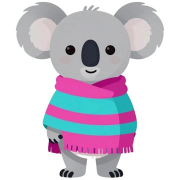

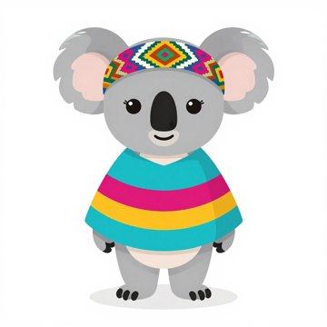
matilda-wave.webp
Seed 4 matches matilda_stand_s4 best: the same stripe order (turquoise, magenta, mustard, turquoise) and the same white-and-colour balaca. Seed 1 is a close second.
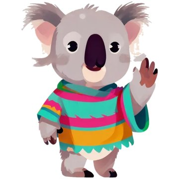

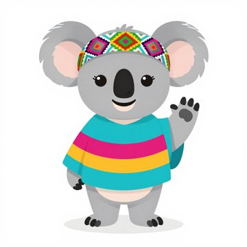

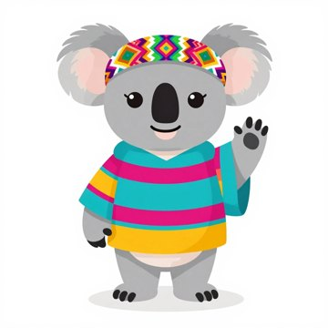

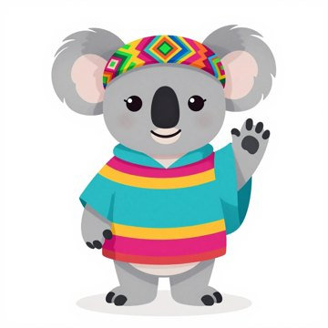

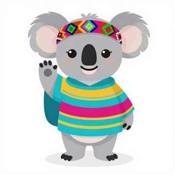
Rejected seeds
s5: no eyelashess6: green stripes and an orange collar on the ruana
matilda-celebrate.webp
Jumping for joy, both arms up, eyes closed with joy. Seed 4 has the cleanest balaca and the right three ruana colours. All six seeds are usable; in this jumping pose the ruana flares into a wider cape.
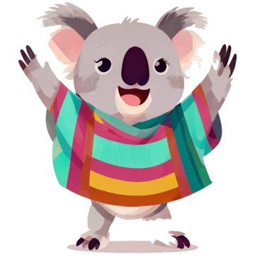

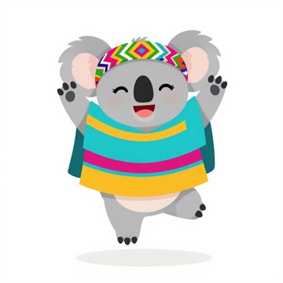

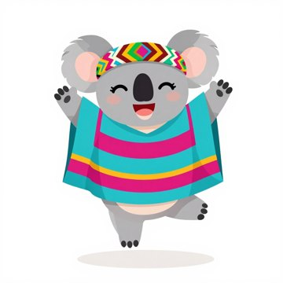

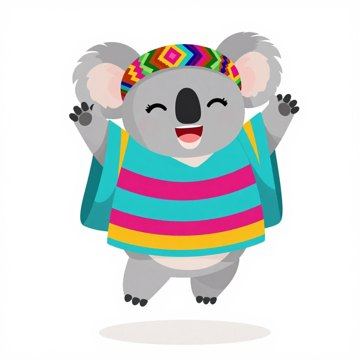

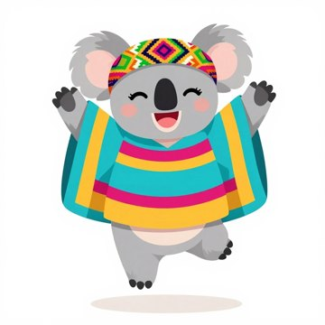
Rejected seeds
s2: usable; smaller balaca patterns5: usable; smaller head
matilda-surprised.webp
Paws on her cheeks, round mouth. Seed 4's balaca is closest to the reference. In the surprised set the wide white eyes replace the lashes on every seed, which reads fine at app size.
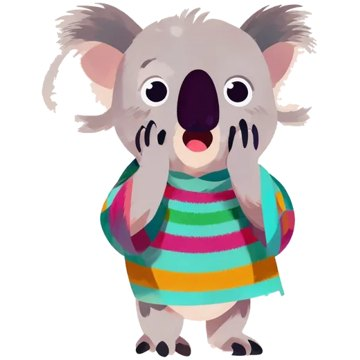

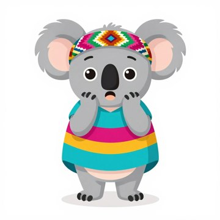

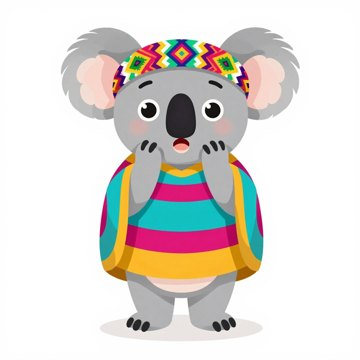

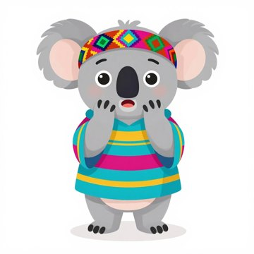
Rejected seeds
s2: dark purple edge on the ruanas5: smaller head, extra side panels on the ruanas6: orange collar on the ruana
matilda-thinking.webp
Paw on chin, looking up. Seed 1 has her lashes, the clearest look-up and a big balaca; its ruana has a mustard hood edge (one of her colours). Seeds 2 and 3 are close seconds; seed 4 is the closest outfit but loses the lashes.
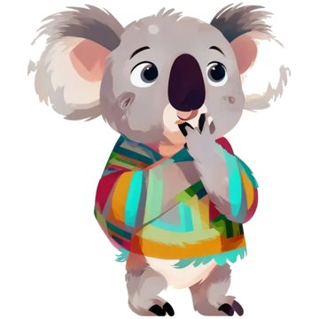

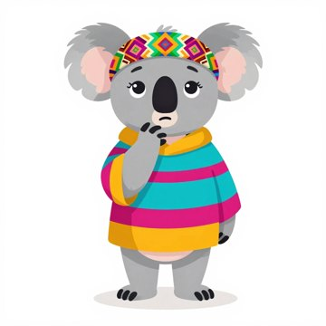

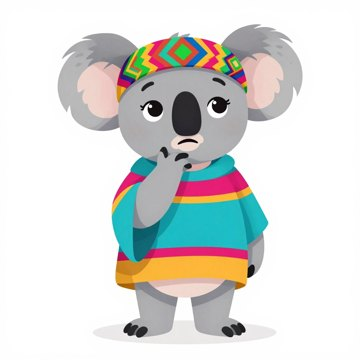

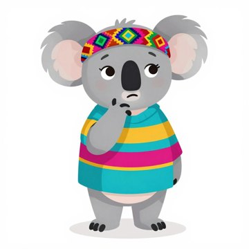

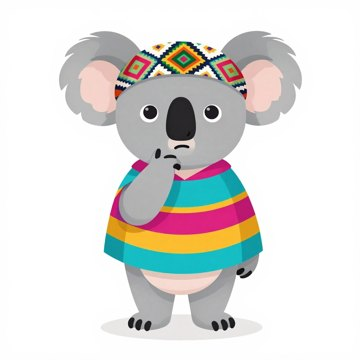
Rejected seeds
s5: fine, but busier extra stripess6: extra magenta flap and busier stripes on the ruana
max-wave.webp
Very close to max_s1: yellow shirt, blue V-neck and sleeve trims, rosy cheeks, no shorts.
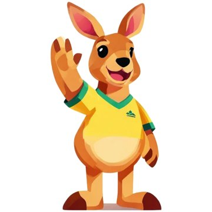

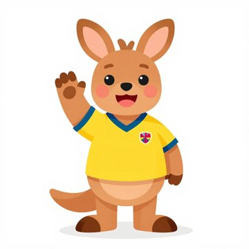

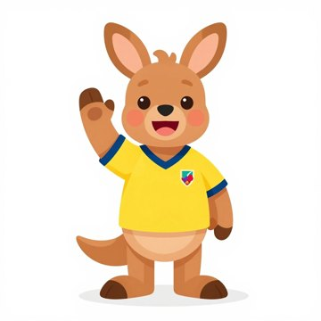

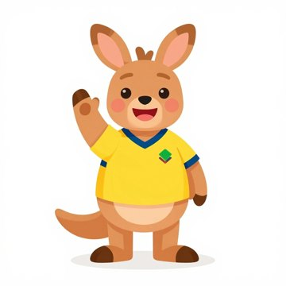
Rejected seeds
s3: green shorts (outfit changed)s4: green shortss6: green shorts
max-jump.webp
Mid-air, arms up, big grin, like max_s1's bounce.


Rejected seeds
s2: green shortss3: green shortss5: drawn on a turquoise rounded cards6: green panel on the shirt side
max-celebrate.webp
Both fists up, eyes closed with joy (was a thumbs-up). Seed 3 has a plain shirt like max_s1; seeds 1 and 6 add a green or red badge.
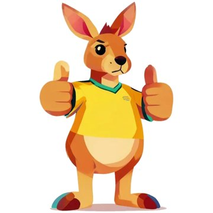

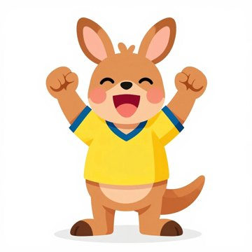

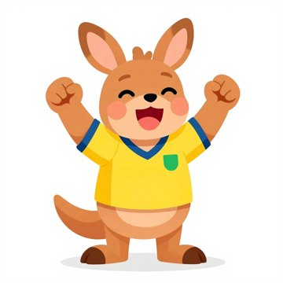

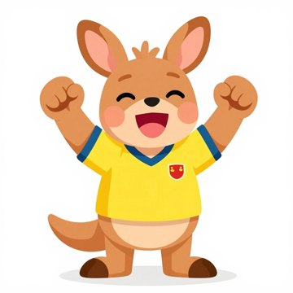
Rejected seeds
s2: usable; extra hair tuft, green badges4: usable; yellow-green badges5: turquoise card behind him, green panel on the shirt
max-surprised.webp
Paws up, mouth open in an O.
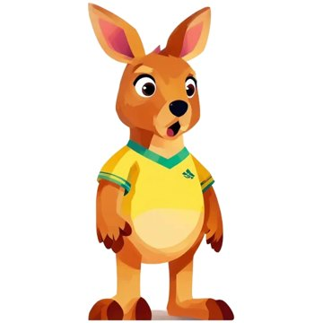

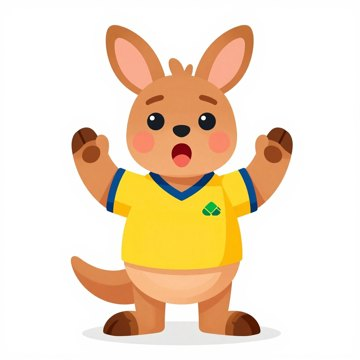

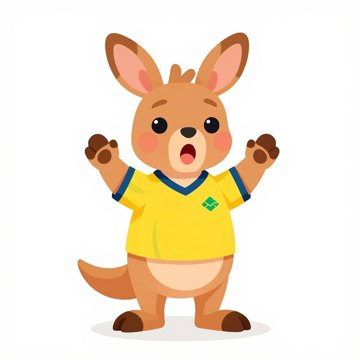

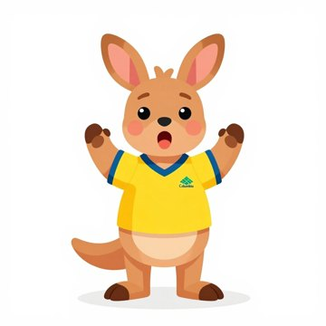
Rejected seeds
s2: green shortss3: green hem on the shirts6: green shorts
max-thinking.webp
Scratching his head, puzzled. Only seed 2 kept the max_s1 outfit: 8 of 9 seeds (3 extra seeds tried) added green shorts, a Columbia logo or a background card. The runners-up shown here have green shorts, for comparison only.
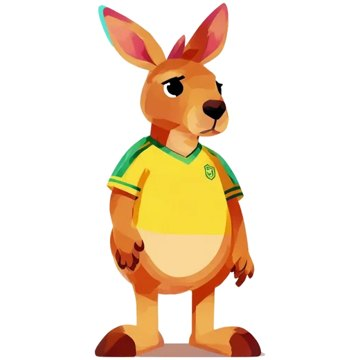

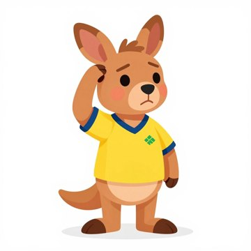

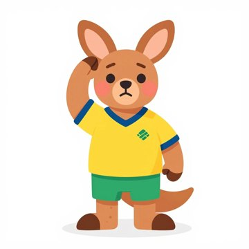

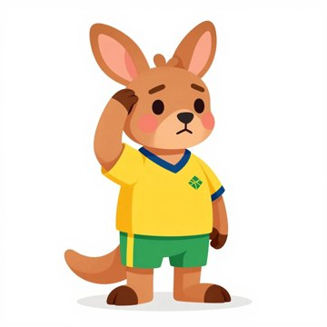
Rejected seeds
s3: green shortss4: green shorts and a logos5: 'Columbia' text and a background cards6: green shortss7: green shortss9: turquoise background card
noun-mapa.webp
A folded paper map with a dotted route and a red pin, as before.


Rejected seeds
s2: pin too big, map blurreds3: map tilted flat, reads less like paper
noun-mundo.webp
A classic globe on a stand with the Americas in front (Colombia visible).


Rejected seeds
s1: Africa in bright pink takes overs4: Africa in front, Americas small
noun-capital.webp
City skyline with a gold star above it (the old picture's idea). Seed 2 has a domed capitol-like building.


Rejected seeds
s3: fewer buildings, reads less as a citys4: fine, plainer
noun-monumento.webp
A stone obelisk on a stepped base, like the old picture (the lesson calls it 'a tall stone tower'). Seeds 5 and 3 are columns, which read more like a pillar.
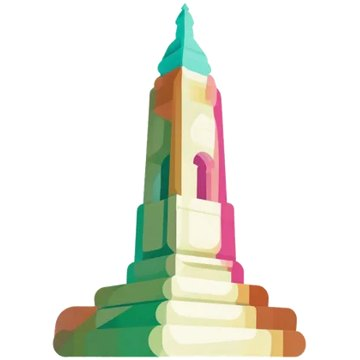

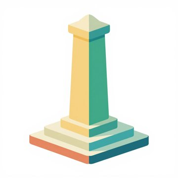

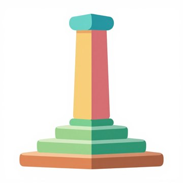

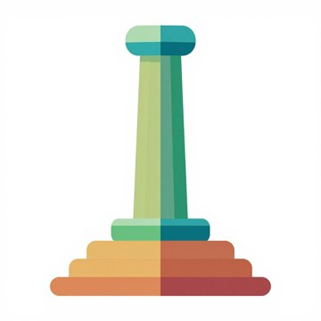
Rejected seeds
s1: gradient on the column (off-style)s2: column cut off at the top edge